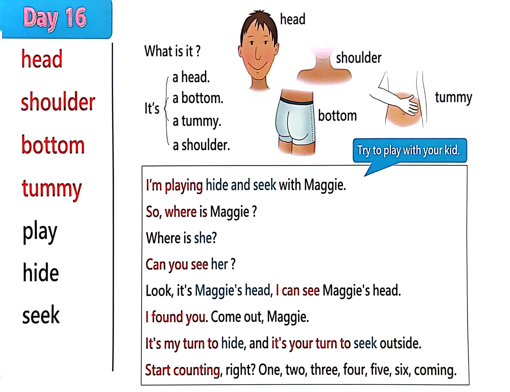

Day 16
Unit 5 · story
教材重点
教材重点依据网盘文件“第二级蓝色每日打卡全.pdf”，第 17 页对应 Day 16；保留文字整理并同时提供原图。
网盘教材重点原图 · PDF 第 17 页对应 Day 16
a tummy. a bottom. What i s i t ? I t’s a head. head shoulder bottom tummy play hide seek a shoulder. I ’m playing hide and seek with Maggie. So, where i s Maggie ? Where i s she? Can you see her ? Look, it's Maggie's head, I can see Maggie's head. I found you. Come out, Maggie. I t's my turn to hide, and i t's your turn to seek outside. Start counting, right? One, two, three, four, five, six, coming. Try to play with your kid. shoulder head bottom tummy

Unit 5 · story · 4–6岁
can · see · look · say
Hello, hello, hello, hello, everyone. Hello.
台词本为机器转写，可能存在识别误差；不等同于视频逐字原声。
详细内容
Part 1 核心词汇
必须掌握 · 4 个Part 2 跟读句型与句型拓展
左侧保留台词本原句，右侧为替换练习；拓展内容不是视频逐字台词。
Hello, hello, hello, hello, everyone. Hello.
Everyone travel everywhere?
Everyone say, hello. Everyone.
Head, shoulders, bottom and tummy.
Five, four.
Part 3 台词本全文
来源：第2级台词本 · 016.Wow!Blue - Unit 5 - part 2 story_5_2.pdf。以下保留网盘 PDF 的机器转写文本，仅清理了文件路径页眉和空行。
Hello, hello, hello, hello, everyone. Hello.
Everyone travel everywhere?
Everyone say, hello. Everyone.
Head, shoulders, bottom and tummy.
Five, four.
Three, two, one, okay, come in, and where is Maggie Where is she.
Where's Maggie? Oh, boys and girls, hi.
I'm playing hide and seek with Maggie, so where is Maggie Can you see her.
I can't. Where is she.
I don't know when magazines.
Hey, look, it's Maggie's head, maggie's head, I can see Maggie's head, maggie.
I found you come out great.
Well, I, sir Maggie's head, can you touch your head?
Touch your head. Yeah. So what is it? Ah, it's a head, say with me, it's a head, it's a head, it's a head
again.
It's ahead, it's ahead, it's ahead. And again,
It's a head, it's a head, yeah, this is my head. Is Maggie, great, so Maggie.
It's my turn to hide, and it's your turn to seek outside, start counting, right? See you walking might turn
to, oh,
Three, four.
Five, six, seven.
Eight, nine, ten coming.
Oh, hello, can you help me find Steve? Oh, where is he? HA, ha,
Who can you see? Steve?
Look, it's Steve's bottom.
Can't you see Steve Bottom, hehy stay.
Thank you.
I can see your bottom, my bottom, look, oh that you could see my.
Bottom you with me, it's a bottom, it's a bottom, it's a bottom, come on.
It's a bottom, it's a bottom, it's a bottom, and again, it's a bottom, it's a bottom, it's a bottom.
Oh dear, but how came my turn to count and your turn to hide?
/
-
/2/016.Wow!Blue - Unit 5 - part 2 story_5_2.txt[2022/3/29
星期二
6:42:40]
So off you go here we go again, one, two.
Miss a few ninety nine one hundred coming, ready or not. Okay. Where's Maggie.
Can you see her Where is she.
Help.
Hey, I can see Maggie, look, can you see her look I can see Maggie's.
Tell me, look, it's Maggie's tummy, can you see it come on? Look, look.
Can you see Maggie's tummy Now?
Yeah, come out, maggie, we found you. We saw Maggie, tommy, didn't We.
Yeah, so.
Pat your to me, pat your tummy and say with me.
It's a tummy, it's a tummy, it's a tummy, and again, it's a tummy, it's a tummy, it's a tummy one more
time.
To me, it's a Tony, this is my Tomy, oh, okay, maggie,
Last time, my turn to hide and your turn to seek, right here we go Now.
This line, I'm going to say really well, so Maggie can't see my head.
My tummy, all my bottom, right off. I go.
Eight.
Nine, ten coming, oh, that's easy.
Can you say, steve?
I can't look, steve, I can see your shoulders.
What.
You can see my shoulders. Oh no, maggie saw my shoulders look.
This is a shoulder.
And this is a shoulder, say, with me ready, we say.
It's a shoulder, it's a shoulder, it's a shoulder, it's a shoulder, it's a shoulder, it's a shoulder, yeah, but
l
ook, I've got one shoulder.
Two shoulders, so what are they ready We say they are shoulders, they are shoulders, they are
shoulders, and again, move your shoulders ready.
They are shoulders dead, our shoulders, yeah, my shoulders, ah, well,
That was a good game, wasn't it? Maggie, yeah, do you like playing hide and seek See you next time.
Bye for now. Bye. Bye. Bye.